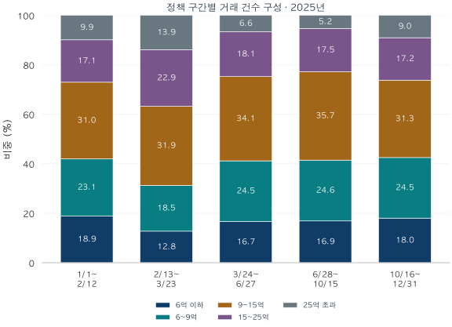

서울 아파트 · 실거래 데이터 노트
대출 규제 뒤, 25억 초과 거래 비중은 왜 커졌을까?
2025년 토허제 해제 전후부터 대출 규제까지 다섯 시기의 가격대별 거래를 비교합니다. 연말에 높아진 고가 거래 비중이 2026년 1분기에 어떻게 달라졌는지도 확인합니다.
분석 기간 · 2025년 계약 · 2026년 1분기 후속 관측 | 보유 자료 스냅샷 생성 · 2026-10-04
2025년 서울의 고가 아파트 거래는 정책 변화의 고비마다 다른 모습을 보였습니다. 토지거래허가구역 일부 해제 뒤 빠르게 늘었고, 확대 지정 뒤에는 줄었습니다. 10월 대출 규제가 강화된 뒤에는 전체 거래가 감소하는 가운데 고가 거래의 몫이 다시 커졌습니다. 이 흐름을 연초부터 따라가 보면 연말의 숫자도 다르게 읽힙니다.
한 해를 다섯 시기로 나눠 읽습니다
첫 번째 경계는 2월 13일입니다. 서울시의 해제 조치는 잠실·삼성·대치·청담 아파트 305곳 중 291곳에 적용됐고, 재건축 추진 아파트 14곳은 지정을 유지했습니다. 강남3구 전체가 풀린 조치는 아니었습니다. 서울시도 해제 전후 거래 설명에서 2월 13일을 기준으로 삼았습니다.
이후 3월 24일 강남3구·용산 확대 지정, 6월 28일 주택구입 목적 주담대 최대 6억 원 제한, 10월 16일 시가별 6억·4억·2억 원 차등 한도를 경계로 구간을 나눴습니다. 마지막 구간에는 10월 20일부터 시행된 토지거래허가 확대도 겹칩니다.
| 시기 | 계약 기간 | 일수 | 거래 건수 | 하루 평균 |
|---|---|---|---|---|
| 해제 전 | 01-01~02-12 | 43 | 4,792 | 111.4 |
| 부분 해제 이후 | 02-13~03-23 | 39 | 11,612 | 297.7 |
| 확대 지정 이후 | 03-24~06-27 | 96 | 21,687 | 225.9 |
| 6·27 대책 이후 | 06-28~10-15 | 110 | 20,919 | 190.2 |
| 10·15 대책 이후 | 10-16~12-31 | 77 | 10,270 | 133.4 |
서울 전체 하루 평균 거래는 111.4건 → 297.7건 → 225.9건 → 190.2건 → 133.4건이었습니다. 부분 해제 이후 구간에서 크게 늘어난 뒤 단계적으로 낮아졌습니다. 이 수치는 서울 전체 집계여서 해제된 291곳의 변화만을 뜻하지는 않습니다. 연초와 설 연휴, 봄·가을 거래 계절도 서로 다릅니다. 정책의 흐름과 거래의 변화를 나란히 읽기 위한 구분입니다.
부분 해제 이후, 15억 초과 거래가 넓어진 자리

1월 1일~2월 12일에는 15억 초과 거래가 전체의 27.0%였습니다. 2월 13일~3월 23일에는 36.7%로 높아졌습니다. 이 중 25억 초과 거래의 비중은 9.87%에서 13.86%로, 하루 평균은 11.00건에서 41.28건으로 늘었습니다. 단순히 다른 가격대가 줄어 생긴 비중 확대가 아니라, 고가 구간의 거래 활동 자체가 빠르게 커졌습니다.
15억 초과~25억 이하도 하루 평균 19.09건에서 68.13건으로 늘었습니다. 허가와 실거주 조건이 완화된 일부 지역에서 구매 선택지가 넓어진 시기와, 서울의 고가 거래 확대가 맞물립니다. 거래가격의 분포가 상단으로 넓어진 장면입니다. 같은 집의 가격 상승률을 측정한 값과는 구별해서 읽어야 합니다.
3월 24일 이후에는 25억 초과 거래가 하루 14.96건, 비중 6.62%로 내려옵니다. 반면 6억 이하의 하루 평균은 38.00건에서 37.80건으로, 6억 초과~9억 이하는 55.23건에서 55.29건으로 거의 유지됐습니다. 확대 지정 전후의 조정은 가격대마다 같은 크기로 나타나지 않았습니다.
가을 대출 규제 뒤에는 거래의 구성이 다시 달라졌습니다
| 2025년 기간 | 6억 이하 | 6억 초과 9억 이하 | 9억 초과 15억 이하 | 15억 초과 25억 이하 | 25억 초과 |
|---|---|---|---|---|---|
| 01-01~02-12 | 905건18.89% 일 21.05건 | 1,108건23.12% 일 25.77건 | 1,485건30.99% 일 34.53건 | 821건17.13% 일 19.09건 | 473건9.87% 일 11.00건 |
| 02-13~03-23 | 1,482건12.76% 일 38.00건 | 2,154건18.55% 일 55.23건 | 3,709건31.94% 일 95.10건 | 2,657건22.88% 일 68.13건 | 1,610건13.86% 일 41.28건 |
| 03-24~06-27 | 3,629건16.73% 일 37.80건 | 5,308건24.48% 일 55.29건 | 7,386건34.06% 일 76.94건 | 3,928건18.11% 일 40.92건 | 1,436건6.62% 일 14.96건 |
| 06-28~10-15 | 3,536건16.90% 일 32.15건 | 5,146건24.60% 일 46.78건 | 7,472건35.72% 일 67.93건 | 3,667건17.53% 일 33.34건 | 1,098건5.25% 일 9.98건 |
| 10-16~12-31 | 1,853건18.04% 일 24.06건 | 2,516건24.50% 일 32.68건 | 3,213건31.29% 일 41.73건 | 1,763건17.17% 일 22.90건 | 925건9.01% 일 12.01건 |
6월 28일~10월 15일에는 25억 초과 거래의 비중이 5.25%까지 낮아졌습니다. 그런데 10월 16일~연말에는 9.01%로 높아집니다. 대출한도가 시가 25억 초과 주택에서 2억 원으로 낮아진 뒤에도 고가 계약이 이어졌고, 전체 시장이 축소되면서 그 존재감이 커졌습니다.
이때 하루 평균 거래는 전체가 190.17건에서 133.38건으로 줄었지만, 25억 초과는 9.98건에서 12.01건으로 약 20.3% 늘었습니다. 뒤 구간의 총건수는 925건으로 앞 구간의 1,098건보다 적습니다. 그러나 기간이 110일에서 77일로 짧아졌기 때문에 하루 평균으로 보면 증가입니다. 비중과 거래 속도를 함께 보면 고가 구간이 연말에 상대적으로 견조했음을 알 수 있습니다.
같은 기간 6억 이하도 비중은 16.90%에서 18.04%로 높아졌지만, 하루 평균은 32.15건에서 24.06건으로 줄었습니다. 가격대의 몫이 커지는 데에는 서로 다른 경로가 있습니다. 고가 구간은 자체 거래 속도까지 높아졌고, 저가 구간은 전체 감소 속도보다 덜 줄면서 비중이 커졌습니다.
2026년 1분기까지 보면, 연말의 고가 집중은 옅어집니다
| 기간 | 전체 일평균 건수 | 25억 초과 일평균 건수 | 25억 초과 건수 비중 | 25억 초과 금액 비중 |
|---|---|---|---|---|
| 2025.10.16~12.31 | 133.38 | 12.01 | 9.01% | 25.29% |
| 2026.1.1~3.31 | 174.92 | 9.01 | 5.15% | 17.13% |
새해 첫 분기에는 전체 하루 평균 거래가 174.92건으로 늘지만 25억 초과는 9.01건으로 줄었습니다. 고가 구간의 건수 비중은 9.01%에서 5.15%, 금액 비중은 25.29%에서 17.13%로 낮아졌습니다. 연말의 고가 집중을 장기간 계속되는 흐름으로 보기보다는, 시장이 위축된 시기에 나타난 특징으로 읽을 근거가 생깁니다.
6억 이하와 6억 초과~9억 이하의 하루 평균은 각각 38.62건, 49.50건으로 전 구간보다 늘었습니다. 두 가격대가 2026년 1분기 거래의 50.38%를 차지합니다. 서울 거래의 회복이 상대적으로 낮은 가격대에서 더 넓게 나타난 모습입니다.
자금 동원력이 다른 수요가 남는 과정, 허가 신청과 계약의 시차, 지역·면적 구성 변화는 이 차이를 설명할 후보입니다. 다만 거래가격은 대출심사의 시가와 다르고, 시행 전 계약·대출 신청·허가 신청에는 경과규정이 적용될 수 있습니다. 이 자료로 매수자의 실제 대출 규모를 확인할 수는 없습니다. 후속 관측에서 고가 거래가 줄었다는 사실 역시 정책 하나의 지연 효과로 단정하기보다는 다음 분기까지 살펴볼 변화로 두겠습니다.
내 예산 구간의 흐름부터 살펴보세요
위 표에서 예산에 가까운 가격대를 골라 비중과 하루 평균을 함께 읽어 보세요. 비중은 시장 안에서의 위치를, 하루 평균은 계약 활동의 크기를 알려줍니다. 연말에 강했던 가격대가 다음 분기에도 강한지까지 이어 보면 한 시기의 인상을 시장 전체의 성격으로 받아들이는 일을 줄일 수 있습니다.
가격대의 비중 다음에는 그 안에서 거래된 집을 보세요. 예산별 면적·연식 비교에서 같은 가격대 안의 조건 차이를 확인할 수 있습니다.
분석 방법·출처·집계 내려받기
분석에 사용한 거래
국토교통부 아파트 매매 실거래가 상세 자료에서 서울 25개 구의 2025년과 2026년 1분기 계약을 집계했습니다. 전용면적 전체를 포함하고 신고일·등기일이 아닌 계약일로 묶었습니다. 중복 병합 후 식별된 해제·직거래, 토지임대부와 정제상 부적격 관측을 제외했습니다. 2025년은 병합 후 77,887건 중 69,280건, 2026년 1분기는 16,758건 중 15,743건을 포함합니다. 공식 전체 거래량 통계와는 포함 기준이 다릅니다.
자료의 기준 시점
2026년 9월 계약분까지 보유한 자료로 2026년 10월 4일 생성한 스냅샷을 사용했습니다. 당시 실시간으로 알 수 있었던 거래량을 복원한 자료는 아닙니다. 이후 신고·정정·해제 반영에 따라 값은 달라질 수 있습니다. 원천의 최신 월인 2026년 9월은 잠정 관측이며 본문 분석에 포함하지 않았습니다.
분모와 가격대
지역 비중은 두 가지입니다. 서울 전체 비중은 25개 구의 거래 건수를, 네 권역 내부 비중은 강남3구·마용성·노도강·금관구 12개 구의 합산 건수를 각각 100%로 둡니다. 두 그래프의 분모를 제목·설명에 구분했습니다. 지역별 재고 세대수로 나눈 회전율은 아닙니다.
다섯 거래가격 구간은 6억 이하, 6억 초과~9억 이하, 9억 초과~15억 이하, 15억 초과~25억 이하, 25억 초과입니다. 경계값은 아래쪽 구간에 포함합니다. 대출한도와 나란히 보는 세 구간 표에서는 앞의 세 가격대를 15억 이하로 합쳤습니다. 실제 대출 규제의 가격 기준은 시가여서 개별 계약의 적용 한도와 일치한다고 볼 수는 없습니다.
건수 비중은 해당 구간 건수÷전체 건수, 금액 비중은 해당 구간 계약금액÷전체 계약금액입니다. 하루 평균은 양끝을 포함한 달력 일수로 나눴으며 계절·영업일 조정은 하지 않았습니다. 2025년 다섯 정책 구간은 순서대로 43·39·96·110·77일로 한 해를 빠짐없이 나눕니다. 2026년 1분기는 90일의 별도 후속 관측입니다. 원천 금액 단위는 만원이며 1조 원은 1억 만원입니다. 반올림한 비중의 합은 100%와 조금 다를 수 있습니다.
해석과 검증
정책 전후의 시장 변화를 관찰한 분석입니다. 대조군·계절 조정·동일 주택 가격 통제 없이 정책 하나의 인과효과를 분리하지 않았습니다. 부분 해제 집계도 해제 단지만의 표본이 아닌 서울 전체이므로 적용 범위와 관측 범위를 구별했습니다.
분기×지역 25개, 월×가격대 75개, 정책·후속 구간×가격대 30개, 같은 구간×지역 30개의 건수와 금액을 별도의 정제 거래 집계와 대조했습니다. 총 160개 공개 셀은 모두 10건 이상입니다. 그림은 동결된 집계로 seaborn 테마·선 그래프와 누적 막대를 작성했습니다. 집계와 정의 내려받기 (JSON). 개별 계약·단지 식별자는 포함하지 않았습니다.
분석·집필: 파파펭귄 (Nobot Kang). 에이전트를 활용해 원문 확인, 계산 검증, 초안과 그림을 작성했습니다.